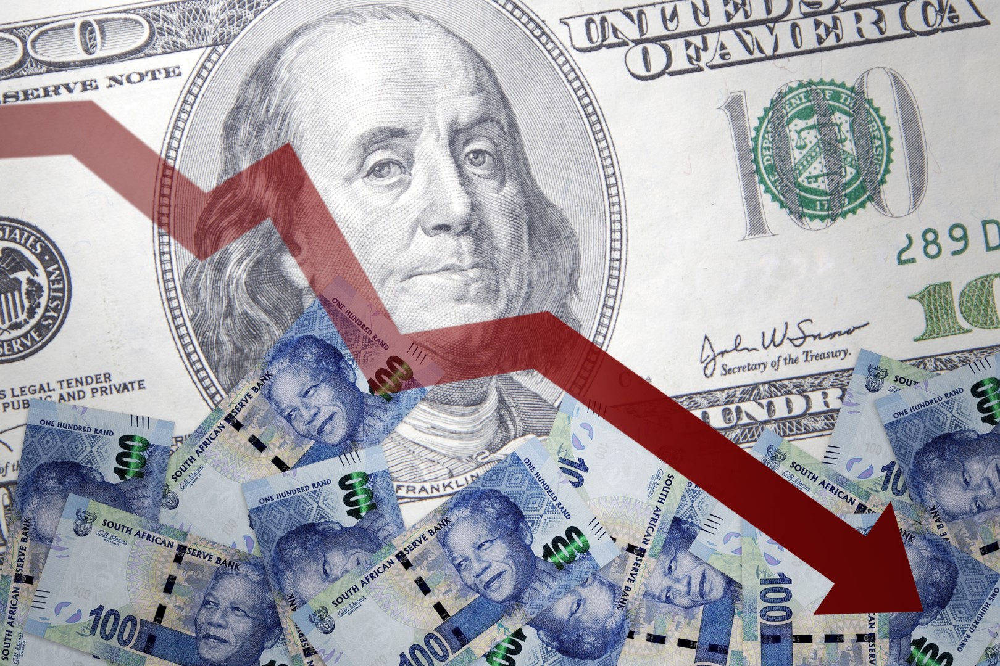
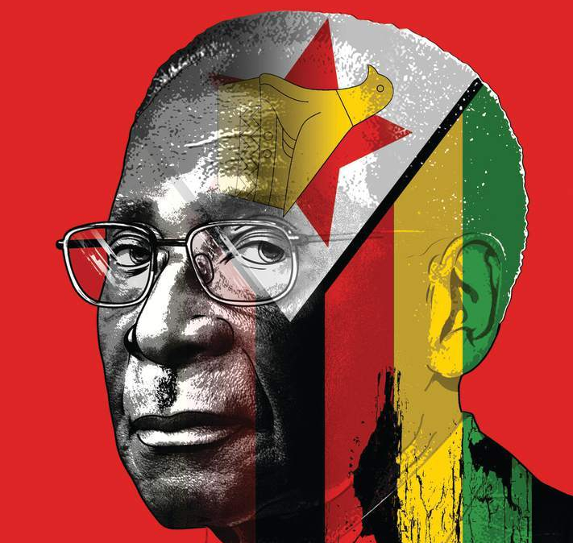
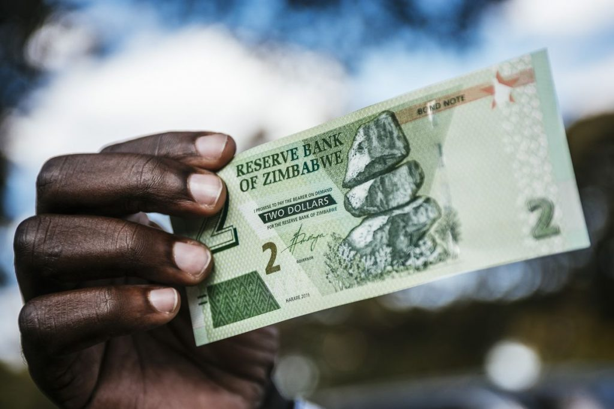

— Mzimazisi Mabaso, Programming Project
Decadal Average
79.6%
Hyperinflation Peak
557.2%
2026 IMF Target
12.0%
Visualizing the Trend

Analysis: The Decadal Economic Cycle
Phase 1: Stability and Deflation (2010–2016)

Following the 2008 hyperinflation crisis, Zimbabwe made the radical decision to stop using the Zimbabwean Dollar entirely. The nation shifted to a multi-currency system, primarily utilizing the US Dollar and South African Rand as legal tender. This brought immediate stability, with inflation rates averaging approximately 3% (World Bank, 2026). However, a strengthening USD eventually caused a liquidity crunch, leading to deflation in 2015 (St. Louis Fed, 2026).
Phase 2: Political Upheaval and Bond Notes (2017–2018)

The economic landscape shifted in 2017 following the impeachment and subsequent resignation of Robert Mugabe. This historic political transition created massive market uncertainty. To solve the shortage of physical US Dollars, the government introduced "Bond Notes." While intended to be 1:1 with the USD, the political instability caused the market to lose faith, ending the deflationary era and sparking a new inflationary climb (IMF, 2024).
Phase 3: The Currency Crisis (2019–2023)

In 2019, the formal re-introduction of a local currency, the RTGS dollar, triggered a rapid devaluation. Without sufficient reserves to back it, inflation soared to a staggering 557.2% by 2020 (FRED, 2026). This period forced the civilian population to rely almost entirely on the informal parallel market for basic goods and survival.
Phase 4: Gold Backing and the ZiG (2024–Present)

In April 2024, the Reserve Bank introduced the Zimbabwe Gold (ZiG), a structured currency backed by physical gold reserves (Reserve Bank of Zimbabwe, 2024). Projections indicate a stabilization toward 12% by 2026. This phase represents the latest attempt to restore confidence by anchoring the national currency to tangible assets rather than policy alone.